Práctica 3: Señales en tiempo discreto
Arellano Sánchez José Alberto
López Piedracruz Marcos Antonio
Luviano Murakawa Tsuioshi Alberto
Robles Cernas Carlos de Jesús
2MV1
Contents
Introducción
Escalamiento horizontal de señales en tiempo discreto.
El escalamiento horizontal se define como:
g[n]=?_hb {f[n]}=f[bn]
Siendo f[n] nuestra señal base y ?_hb nuestro escalamiento horizontal b.
f[n]= 2; -4<bn<2
n-1; 1<bn<6
Despejando n nos queda de la siguiente manera:
f[n]= 2; -4/b<n<-2/b
n-1; 1/b<n<6/b
Cuando tenemos una función cualquiera escalada en un valor b, si b<1 nuestra señal original se expande, por otro lado, si b>1 nuestra señal se compacta. Es importante hacer énfasis en que si el resultado de la función en n no está definido como un entero. Al comprimirse sucede algo llamado “Decimation” haciendo que se pierdan datos y se conserven los b-ésimos números. Cuando b<0 suceden 2 cosas, la grafica se invierte y se comprime o expande dependiendo del valor de b.
Ejemplo:
Sea f[x]= -n -4<n<-2
n -1<n<6
Escale la funcion horizontalmente en b=5.
Se sustituye bn en n, en este caso b=-5.
f[x]= -n -4<5n<-2
n -1<5n<6
Despejamos n y cambiamos los limites.
f[x]= -n -4/5<n<-2/5
n -1/5<n<6/5
Ejercicio 1
Crea una función que se llame fun1 y reciba dos parametros y 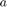 la función debe
%regresar la evaluación $f[n]=r^ncos[\Omega n]+ r^nsen(\Omega n)j$, esta función debe trabajar con %$r\in R^+$, $\Omega\in R$ y $n\in N^n$. Debe mostrar su código en el reporte (sin ejecutar). syms n f1 = fun1(pi,4, n); % Funcion fun1: % function [ f_1 ] = fun1( omega ,r ) % syms n % f1 = r^n*cos(omega*n)+r^n*sin(omega*n); % f = @(n) f1; % f_1 = f(n); % end
Ejercicio 2
Construya una función que gráfique funciones de 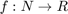 en el formato de su elección y pruebe su código mostrando la gráfica de 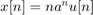 vs 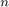 para 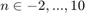 para 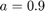, no debe incluir el código, solo el uso de la función para mostrar la gráfica, puede utilizar una función anonima para este fin
syms n u = @(n) 1*(n>=0); a = 0.9; f2 = @(n) n.*(a.^n).*u(n); n2 = 0:1:10; Grafica2(n2,f2(n2),'Gráfica en R')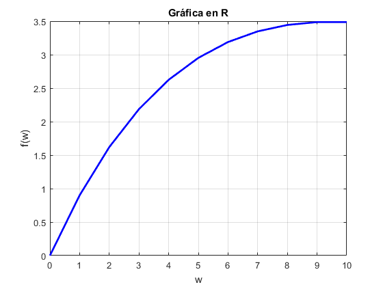
Ejercicio 3
Construya una función que gráfique funciones de 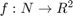 en el formato de su elección y pruebe su código mostrando la gráfica de la función exponencial del primer problema, no debe incluir el código, solo el uso de la función para mostrarla gráfica. Reporte la gráfica de 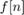 para 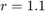, 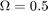 y 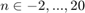 (recuerde que ya tiene una función para esto). Reporte la gráfica de 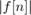 vs y 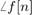 vs (puedes con sultar con help la descripción de abs, angle, atan2). Solo reporte las graficas.
r = 1.1;
omega = 0.5;
n3 = -2:1:20;
f3 = fun1(omega, r, n3);
Grafica3(n3,f3(n3),'Gráfica en R2')
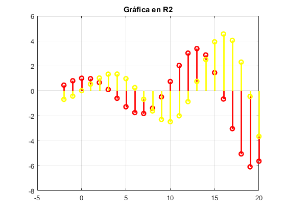 Ejercicio 4
Programe una función que calcule la energía de una señal en tiempo discreto la función se debe llamar energiadis. La función recibe dos paramétros de entrada: el vector de tiempo y las alturas asignadas. La función regresa la energia de la señal y despliega la gráfica de la señal. Debe mostrar su código en el reporte (sin ejecutar).
%k=input ('¿Hasta que número realizar el usuario?'); %s=0; %for n=-k:k % s=s+abs((n)^2); %end %disp(s);
Ejercicio 5
Resuelva el problema 3.1.1 c) de Lathi, aplicando su función anterior.
%a) k=3; s_1=0; s_2=0; for n=-k:0 s_1=s_1+abs((n+3)^2); end for n=1:k s_2=s_2+abs((n-3)^2); end s=s_1+s_2; disp(s); % %b) k=6; s_1=0; s_2=0; for n=0:3 s_1=s_1+abs((n)^2); end for n=4:k s_2=s_2+abs((-n+6)^2); end s=s_1+s_2; disp(s); % %c) k=3; s=0; for n=-k:k s=s+abs((3.*n)^2); end disp(s); % %d) k=2; s_1=0; s_2=0; for n=-k:0 s_1=s_1+abs((-2.*n)^2); end for n=0:k s_2=s_2+abs((2.*n)^2); end s=s_1+s_2; disp(s);
19
19
252
40
Ejercicio 6
%Resuelve el problema 3.2.3 de Lathi x=[-10:1:10]; y=[-10:1:10]; figure subplot(2,3,1), stem(-x,y,'filled'), title('x[-n]'); grid on; subplot(2,3,2), stem ((x-6),y,'filled'),title('x[n+6]');; grid on; subplot(2,3,3), stem ((x+6),y,'filled'),title('x[n-6]');; grid on; subplot(2,3,4), stem ((x/3),y,'filled'),title('x[3n]'); grid on; subplot(2,3,5), stem ((3*x),y,'filled'),title('x[n/3]'); grid on; subplot(2,3,6), stem ((3+x),-y,'filled'),title('x[3-n]'); grid on;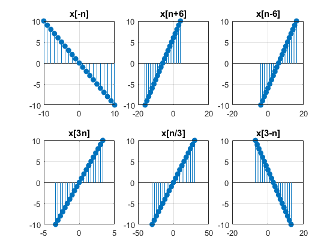